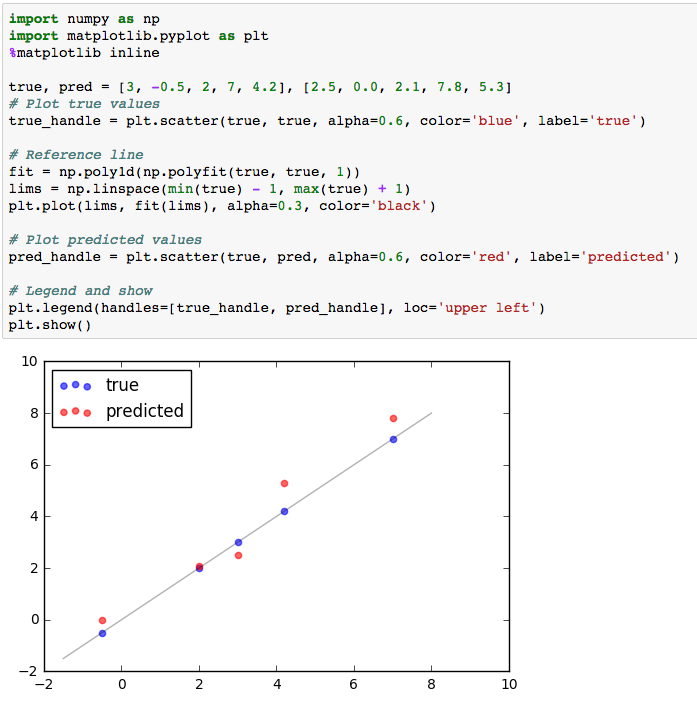

Seu projeto não pôde ser revisado. Favor reenviar após resolver o problema apontado pelo revisor.
None provided
None provided
Quase lá, você avançou bastante.
Vejo que você se esforçou bastante no seu projeto.
Com apenas algumas melhorias poderá seguir em frente, mas antes vamos garantir que você tem uma sólida compreensão dos conceitos apresentados aqui.
Não desista e boa sorte!
Paulo
PS: Se tiver alguma dúvida em relação à revisão você pode me encontrar no Slack como @paulo
Todas as estatísticas pedidas foram calculadas corretamente para o conjunto de dados de imóveis de Boston.
O aluno utilizou corretamente as funções da biblioteca NumPy para obter esses resultados.
Bom trabalho calculando estatísticas sobre o conjunto de dados, mas a rubrica requer que você utilize a biblioteca numpy que é altamente eficiente e muito utilizada em projetos de aprendizado de máquina.
Além disso, a função std do pandas deve ter o parâmetro ddof=0 para calcular da mesma forma que a biblioteca numpy ou o resultado será diferente devido à diferença no Grau de liberadade padrão de cada biblioteca.
Veja aqui uma lista das funções estatísticas dessa biblioteca.
O aluno justifica corretamente como cada atributo se correlaciona com um aumento ou diminuição na variável alvo.
Boa intuição sobre a correlação entre MEDV e as features e excelente exploração dos dados.
Essa intuição é essencial em projetos de aprendizado de máquina, por exemplo, para avaliar se os resultados são razoáveis.
O aluno identifica corretamente se o modelo hipotético captura a variação da variável-alvo, baseado no coeficiente de determinação (R2). O código da métrica de desempenho está corretamente implementado.
porque o valor de R² é próximo de 1.
Excelente!
Métricas como essa são muito importantes para avaliar a performance de modelos.
Lembre se que um coeficiente de 0.923 significa que 92.3% da variação pode ser explicada pelo modelo.
Uma visualização possível nesse cenário:

O aluno dá uma razão válida para separar o conjunto de dados entre subconjuntos de treinamento e teste. O código de divisão em subconjuntos é corretamente implementado.
Se não separarmos o conjunto de dados entre treino e teste pode ocorrer o sobreajuste
Você está no caminho certo.
Note que o sobreajuste não é causado pela ausência do conjunto de dados de teste, ele apenas serve para que seja possível identificar sua presença.
Para mais informações veja:
O aluno identifica corretamente a tendência das curvas de treinamento e teste de acordo com o aumento do número de pontos. Também é discutido se o aumento do número de pontos beneficia o modelo.
Não, o efeito de inserir mais dados treinamento diminui após 200 pontos
Bom trabalho!
Realmente não há benefício em aumentar o tamanho do conjunto de treinamento além dos quase 400 pontos já existentes, já que a curva de testes já estabilizou.
Já no caso de overfitting é mais benéfico reduzir a complexidade do modelo.
O aluno identifica corretamente se o modelo tem problemas de viés ou variância quando sua profundidade máxima é igual a 1 e 10, justificando através do gráfico de curvas de complexidade.
Você identificou corretamente o alto viés e alta variância.
Em suma, alto viés significa que o modelo não é complexo o suficiente para aprender os padrões dos dados, resultando em baixa performance tanto no conjunto de dados de treinamento quanto de validação. Assim, é possível ver tanto o score de treinamento quanto testes com desempenho ruim.
Enquanto isso, alta variância significa que o modelo é complexo demais e aprende padrões a partir de variações aleatórias dos dados, perdendo a capacidade de generalizar dados novos e que resulta em uma baixa performance no conjunto de dados de teste e alta no de treinamento.
O aluno escolheu um modelo ótimo de melhor suposição e justifica razoavelmente, usando o gráfico de complexidade do modelo.
Boa escolha, eu também escolheria a curva com max_depth = 4 pelo melhor desempenho no conjunto de dados de validação, o que indica uma melhor capacidade de generalização.
O aluno descreve corretamente o método de busca em matriz e como ele pode ser aplicado a um algoritmo de aprendizagem.
Boa descrição da técnica de busca em matriz!
Em suma, a técnica de busca em matriz consiste em fazer uma uma busca exaustiva da combinação de hiperparâmetros que resulta em um modelo com a melhor performance, treinando e testando continuamente todas as combinações de hiperparâmetros.
Uma alternativa é RandomizedSearchCV que não faz uma busca exaustiva.
O aluno descreve corretamente o método k-fold de validação cruzada e discute os benefícios de sua aplicação quando usado com a busca em matriz para otimizar um modelo.
Boa descrição da técnica k-fold.
Resumindo, essa técnica divide o conjunto de dados em k dobras e a cada iteração utiliza uma delas para validação, treinando o modelo com o resto delas e ao final calcula a média da performance de validação.
Eu gosto de descrever o benefício dessa técnica junto a busca em matriz, Grid Search, ser o uso do dataset de treinamento como múltiplos datasets de treinamento e teste, evitando que algum viés no conjunto de dados cause uma escolha de hiperparâmetros que funcionem apenas para determinados subconjuntos de treinamento e teste.
O código da função fit_model foi corretamente implementado.
Boa implementação!
Você também pode utilizar a função range(a, b) que gera uma lista de inteiros onde a <= x < b no lugar de listar todos os números.
O aluno identifica corretamente o modelo ótimo e o compara à sua resposta anterior.
Bom trabalho!
O aluno relata o preço de venda para os três clientes listados na tabela. A discussão sobre os preços serem razoáveis leva em consideração os dados e as estatísticas descritivas calculadas anteriormente.
O aluno discute a fundo se o modelo deve ou não ser usado no mundo real.
Você tem bons argumentos para não utilizarmos esse modelo. Ele realmente não apresenta robustez e os dados são muito antigos e incompletos para tal.
Recomendo apenas uma indicação explícita para se o modelo construído deve ou não ser utilizado de acordo com as configurações do mundo real.
Senti falta de um comentário sobre a consistência das previsões, levando em conta Range in prices mostrado na seção Sensibilidade.

Ben compartilha 5 dicas úteis para a revisão ressubmissão do seu projeto.
Assistir Vídeo (3:01)